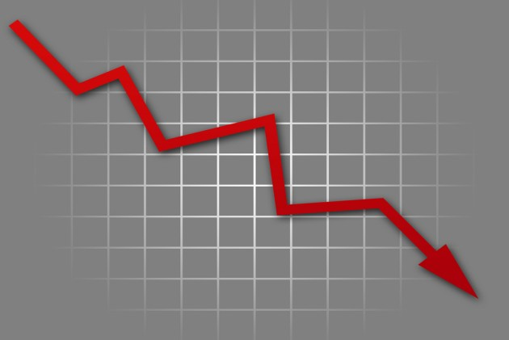

The Effects on Indian Equity Markets due to Covid-19
Indian shares were set for another sharp fall on Friday, as global markets continued to reel under the impact of the fast-spreading coronavirus outbreak, which threatens to disrupt global growth.
The NSE stock futures listed on Singapore Exchange slipped to a more than two-year low, sliding 6.3% by 0241 GMT.
Concerns over the virus have hammered financial markets and disrupted businesses globally as countries around the world grapple with how to contain the outbreak and its economic impact.
Indian stock markets plunged into bear territory on Thursday with the NSE Nifty 50 index plunging 8.3% to its lowest close in 2-1/2 years, and the S&P BSE Sensex sliding about 8% to a near two-year low.
Fall & Rise of the Indian Stock Markets |
|  |
Sensex |
Nifty 50 |
| Then |
36,000 |
12,000 |
| March-lows |
23,000 |
7,500 |
| Present |
34,500 |
11,200 |